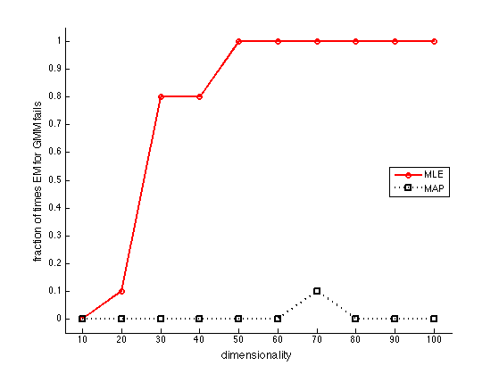

Demonstrate failure of MLE for GMMs in high-D case, whereas MAP works
PMKTauthor Hannes Bretschneider PMTKmodified Matt Dunham
Contents
Create data
% This file is from pmtk3.googlecode.com setSeed(0); trialsPerDeg = 10; N = 100; K = 3; %dims = [3:2:13, 15:5:50]; dims = [10:10:100];
Don't display these warnings, we are expecting them.
wstate = warning('query', 'all'); warning('off', 'MATLAB:nearlySingularMatrix'); warning('off', 'logdet:posdef'); warning('off', 'MATLAB:illConditionedMatrix'); warning('off', 'convergenceTest:fvalDecrease'); warning('off', 'MATLAB:singularMatrix');
Consider these warnings, full errrors
errorSet = { 'logdet:posdef'
'convergenceTest:fvalDecrease'
'MATLAB:singularMatrix'
};
NmleFail = zeros(length(dims), 1); NmapFail = zeros(length(dims), 1); for dimi = 1:length(dims) D = dims(dimi); NmleFail(dimi) = 0; NmapFail(dimi) = 0; Sigma = zeros(D,D,K); for seedi=1:trialsPerDeg
mu = [-1 1 zeros(1,D-2); 1 -1 zeros(1,D-2); 3 -1 zeros(1,D-2)]';
Sigma(:,:,1) = [1 -.7 zeros(1,D-2); -.7 1 zeros(1,D-2);...
zeros(D-2,2) eye(D-2)];
Sigma(:,:,2) = [1 .7 zeros(1,D-2); .7 1 zeros(1,D-2);...
zeros(D-2,2) eye(D-2)];
Sigma(:,:,3) = [1 .9 zeros(1,D-2); .9 1 zeros(1,D-2);...
zeros(D-2,2) eye(D-2)];
X = NaN(N, D, K);
for c=1:K
R = chol(Sigma(:,:,c));
X(:,:,c) = repmat(mu(:,c)', N, 1) + randn(N, D) * R;
end
X = [X(:,:,1); X(:,:,2)];
mu0 = rand(D,K);
mixweight = normalize(ones(K,1));
initParams.mu = mu0;
initParams.Sigma = Sigma;
initParams.mixWeight = mixweight;
Fit
try lastwarn(''); [modelGMM, loglikHistGMM] = mixGaussFit(X, K, ... 'initParams', initParams, 'prior', 'none', 'mixPrior', 'none'); [msg, id] = lastwarn(); if ~isempty(msg) && ismember(id, errorClass) error('warning caught'); end catch %#ok fprintf('MLE failed\n'); NmleFail(dimi) = NmleFail(dimi) + 1; end try lastwarn(''); prior = makeGaussInvWishartDataDependentPrior(X, K); [modelGMMMAP, loglikHistGMMMAP] = mixGaussFit(X, K, ... 'initParams', initParams, 'prior', prior); [msg, id] = lastwarn(); if ~isempty(msg) && ismember(id, errorClass) error('warning caught'); end catch %#ok fprintf('MAP failed\n'); NmapFail(dimi) = NmapFail(dimi) + 1; end
initializing model for EM 1 loglik: -3540.73 2 loglik: -2838.73 3 loglik: -2811.44 4 loglik: -2793.81 5 loglik: -2779.9 6 loglik: -2767.59 7 loglik: -2755.41 8 loglik: -2748.6 9 loglik: -2744.2 10 loglik: -2740.73 11 loglik: -2738.94 12 loglik: -2736.39 13 loglik: -2733.73 14 loglik: -2732.17 15 loglik: -2731.57 16 loglik: -2730.16 17 loglik: -2729.37 18 loglik: -2729.32 initializing model for EM 1 loglik: -3875.68 2 loglik: -3069.4 3 loglik: -2987.35 4 loglik: -2933.85 5 loglik: -2907.26 6 loglik: -2891.82 7 loglik: -2884.88 8 loglik: -2880.03 9 loglik: -2878.55 10 loglik: -2878.06 11 loglik: -2877.75 12 loglik: -2876.94 13 loglik: -2873.22 14 loglik: -2869.69 15 loglik: -2869.28 16 loglik: -2869
initializing model for EM 1 loglik: -3463.99 2 loglik: -2888.12 3 loglik: -2851.33 4 loglik: -2826.84 5 loglik: -2809.17 6 loglik: -2798.15 7 loglik: -2782.66 8 loglik: -2776.82 9 loglik: -2772.52 10 loglik: -2771.03 11 loglik: -2769.83 12 loglik: -2768.8 13 loglik: -2768.23 14 loglik: -2767.79 15 loglik: -2767.35 16 loglik: -2767 17 loglik: -2766.78 initializing model for EM 1 loglik: -3793.43 2 loglik: -3122.63 3 loglik: -3016.29 4 loglik: -2940.13 5 loglik: -2913.36 6 loglik: -2908.81 7 loglik: -2907.13 8 loglik: -2905.78 9 loglik: -2904.38 10 loglik: -2901.92 11 loglik: -2897.4 12 loglik: -2895.14 13 loglik: -2894.72 14 loglik: -2894.56
initializing model for EM 1 loglik: -3317.99 2 loglik: -2830.85 3 loglik: -2796.62 4 loglik: -2773.28 5 loglik: -2757.23 6 loglik: -2749.07 7 loglik: -2746.56 8 loglik: -2744.09 9 loglik: -2739.31 10 loglik: -2734.38 11 loglik: -2733.77 12 loglik: -2733.2 13 loglik: -2732.61 14 loglik: -2732.01 15 loglik: -2731.48 16 loglik: -2730.9 17 loglik: -2729.91 18 loglik: -2729.22 19 loglik: -2729 initializing model for EM 1 loglik: -3647.92 2 loglik: -3005.47 3 loglik: -2886.99 4 loglik: -2842.37 5 loglik: -2837.25 6 loglik: -2834.39 7 loglik: -2833.01 8 loglik: -2832.67 9 loglik: -2832.49
initializing model for EM 1 loglik: -3323.92 2 loglik: -2858.67 3 loglik: -2815.89 4 loglik: -2781.68 5 loglik: -2764.56 6 loglik: -2756.6 7 loglik: -2749.5 8 loglik: -2745.8 9 loglik: -2745.04 10 loglik: -2744.5 11 loglik: -2744 12 loglik: -2743.17 13 loglik: -2740.74 14 loglik: -2737.6 15 loglik: -2736.28 16 loglik: -2735.59 17 loglik: -2735.21 18 loglik: -2734.86 19 loglik: -2734.45 20 loglik: -2734.3 initializing model for EM 1 loglik: -3659.24 2 loglik: -3039.63 3 loglik: -2951.05 4 loglik: -2902.76 5 loglik: -2878.07 6 loglik: -2870.9 7 loglik: -2868.34 8 loglik: -2867.76 9 loglik: -2867.49
initializing model for EM 1 loglik: -3484.01 2 loglik: -2889.75 3 loglik: -2850.12 4 loglik: -2815.42 5 loglik: -2784.79 6 loglik: -2768.85 7 loglik: -2762.24 8 loglik: -2756.47 9 loglik: -2754.78 10 loglik: -2752.97 11 loglik: -2750.51 12 loglik: -2749.73 13 loglik: -2748.95 14 loglik: -2748.79 initializing model for EM 1 loglik: -3818.44 2 loglik: -3121.2 3 loglik: -3003.31 4 loglik: -2916.58 5 loglik: -2884.69 6 loglik: -2871.99 7 loglik: -2867.27 8 loglik: -2865.99 9 loglik: -2865.61 10 loglik: -2865.25 11 loglik: -2864.86 12 loglik: -2864.53 13 loglik: -2864.25
initializing model for EM 1 loglik: -3457.49 2 loglik: -2923.49 3 loglik: -2887.74 4 loglik: -2869.33 5 loglik: -2858.69 6 loglik: -2849.46 7 loglik: -2843.54 8 loglik: -2841.47 9 loglik: -2840.65 10 loglik: -2840.11 11 loglik: -2839.68 12 loglik: -2839.32 13 loglik: -2839.08 initializing model for EM 1 loglik: -3781.57 2 loglik: -3172.58 3 loglik: -3079.86 4 loglik: -3021.96 5 loglik: -3000.19 6 loglik: -2969.15 7 loglik: -2956.18 8 loglik: -2955.68 9 loglik: -2955.49
initializing model for EM 1 loglik: -3368.73 2 loglik: -2836.31 3 loglik: -2795.71 4 loglik: -2770.18 5 loglik: -2762.7 6 loglik: -2760.4 7 loglik: -2757.68 8 loglik: -2753.91 9 loglik: -2751.06 10 loglik: -2749.66 11 loglik: -2748.83 12 loglik: -2748.35 13 loglik: -2748.08 14 loglik: -2747.75 15 loglik: -2747.3 16 loglik: -2747.08 initializing model for EM 1 loglik: -3703.51 2 loglik: -3049.84 3 loglik: -2968.66 4 loglik: -2930.22 5 loglik: -2913.08 6 loglik: -2897.38 7 loglik: -2881.58 8 loglik: -2870.24 9 loglik: -2867.45 10 loglik: -2865.96 11 loglik: -2864.52 12 loglik: -2860.88 13 loglik: -2860.58 14 loglik: -2860.54
initializing model for EM 1 loglik: -3546.85 2 loglik: -2915.66 3 loglik: -2881.43 4 loglik: -2854.96 5 loglik: -2843.71 6 loglik: -2838.67 7 loglik: -2833.21 8 loglik: -2827.35 9 loglik: -2826.22 10 loglik: -2825.37 11 loglik: -2824.49 12 loglik: -2823.6 13 loglik: -2822.51 14 loglik: -2821.16 15 loglik: -2819.93 16 loglik: -2819.21 17 loglik: -2818.43 18 loglik: -2817.59 19 loglik: -2816.82 20 loglik: -2815.69 21 loglik: -2814.42 22 loglik: -2813.87 23 loglik: -2813.62 initializing model for EM 1 loglik: -3872.19 2 loglik: -3165.96 3 loglik: -3077.24 4 loglik: -3035.86 5 loglik: -3013.53 6 loglik: -2983.36 7 loglik: -2959.93 8 loglik: -2951.59 9 loglik: -2947.55 10 loglik: -2936.31 11 loglik: -2930.6 12 loglik: -2925.97 13 loglik: -2919.43 14 loglik: -2914.66 15 loglik: -2906.91 16 loglik: -2892.54 17 loglik: -2888.6 18 loglik: -2883.03 19 loglik: -2880.58 20 loglik: -2879.98 21 loglik: -2879.5 22 loglik: -2878.04 23 loglik: -2877.6 24 loglik: -2877.59
initializing model for EM 1 loglik: -3387.4 2 loglik: -2858.5 3 loglik: -2827.26 4 loglik: -2804.07 5 loglik: -2784.06 6 loglik: -2772.27 7 loglik: -2767.8 8 loglik: -2764.7 9 loglik: -2762.53 10 loglik: -2759.85 11 loglik: -2758.31 12 loglik: -2754.18 13 loglik: -2753.06 14 loglik: -2752.94 initializing model for EM 1 loglik: -3722.17 2 loglik: -3067.78 3 loglik: -2935.83 4 loglik: -2869.09 5 loglik: -2826.84 6 loglik: -2798.13 7 loglik: -2790.08 8 loglik: -2786.08 9 loglik: -2783.79 10 loglik: -2782.19 11 loglik: -2782.19
initializing model for EM 1 loglik: -3842 2 loglik: -2926.59 3 loglik: -2897.53 4 loglik: -2872.41 5 loglik: -2849.07 6 loglik: -2838.78 7 loglik: -2832.84 8 loglik: -2827.71 9 loglik: -2822.7 10 loglik: -2818.88 11 loglik: -2815.71 12 loglik: -2810.83 13 loglik: -2807.5 14 loglik: -2806.01 15 loglik: -2804.3 16 loglik: -2802.19 17 loglik: -2801.15 18 loglik: -2800.68 19 loglik: -2800.38 20 loglik: -2800.16 initializing model for EM 1 loglik: -4165.76 2 loglik: -3209.97 3 loglik: -3158.98 4 loglik: -3111.88 5 loglik: -3079.35 6 loglik: -3058.96 7 loglik: -3042.9 8 loglik: -3035.4 9 loglik: -3032.71 10 loglik: -3018.02 11 loglik: -3015.09 12 loglik: -3014.42 13 loglik: -3014 14 loglik: -3013.62 15 loglik: -3013.18 16 loglik: -3012.76 17 loglik: -3012.54
initializing model for EM 1 loglik: -6512.31 2 loglik: -5530.75 3 loglik: -5402.71 4 loglik: -5329.78 5 loglik: -5216.21 6 loglik: -4923.28 7 loglik: -4946.15 8 loglik: -4917.6 MLE failed initializing model for EM 1 loglik: -7793.34 2 loglik: -6054.29 3 loglik: -5545 4 loglik: -5483.99 5 loglik: -5467.34 6 loglik: -5454.29 7 loglik: -5446.74 8 loglik: -5438.38 9 loglik: -5435.12 10 loglik: -5430.83 11 loglik: -5430 12 loglik: -5429.79
initializing model for EM 1 loglik: -6492.56 2 loglik: -5472.03 3 loglik: -5400.5 4 loglik: -5364.04 5 loglik: -5352.56 6 loglik: -5346.8 7 loglik: -5341.99 8 loglik: -5333.03 9 loglik: -5326.43 10 loglik: -5324.42 11 loglik: -5323.36 12 loglik: -5320.4 13 loglik: -5319.16 14 loglik: -5318.73 initializing model for EM 1 loglik: -7782.28 2 loglik: -6095.01 3 loglik: -5837.83 4 loglik: -5695.74 5 loglik: -5671.05 6 loglik: -5667.21 7 loglik: -5665.98 8 loglik: -5662.59 9 loglik: -5655.49 10 loglik: -5655.09
initializing model for EM 1 loglik: -6861.92 2 loglik: -5503.49 3 loglik: -5377.79 4 loglik: -5318.54 5 loglik: -5300.56 6 loglik: -5296.97 7 loglik: -5293.21 8 loglik: -5291.24 9 loglik: -5291.18 initializing model for EM 1 loglik: -8135.98 2 loglik: -5992.19 3 loglik: -5623.62 4 loglik: -5551.47 5 loglik: -5504.21 6 loglik: -5447.86 7 loglik: -5426.94 8 loglik: -5405.39 9 loglik: -5386.61 10 loglik: -5356.2 11 loglik: -5329.55 12 loglik: -5322.48 13 loglik: -5322.48
initializing model for EM 1 loglik: -6499.37 2 loglik: -5504.13 3 loglik: -5403.72 4 loglik: -5329.57 5 loglik: -5302.85 6 loglik: -5291.83 7 loglik: -5289.83 8 loglik: -5285.05 9 loglik: -5281.41 10 loglik: -5281.29 initializing model for EM 1 loglik: -7793.97 2 loglik: -6071.71 3 loglik: -5553.12 4 loglik: -5355.9 5 loglik: -5250.13 6 loglik: -5221.53 7 loglik: -5214.57 8 loglik: -5205.52 9 loglik: -5204.25 10 loglik: -5204.18
initializing model for EM 1 loglik: -6595.04 2 loglik: -5515.15 3 loglik: -5412.37 4 loglik: -5347.31 5 loglik: -5309.61 6 loglik: -5308.78 7 loglik: -5308.41 initializing model for EM 1 loglik: -7865.38 2 loglik: -5944.38 3 loglik: -5401.34 4 loglik: -5273.11 5 loglik: -5223.62 6 loglik: -5187.32 7 loglik: -5147.87 8 loglik: -5112.9 9 loglik: -5112.85
initializing model for EM 1 loglik: -6557.72 2 loglik: -5557.14 3 loglik: -5445.38 4 loglik: -5363.94 5 loglik: -5346.86 6 loglik: -5344.63 7 loglik: -5344.3 initializing model for EM 1 loglik: -7836.73 2 loglik: -5879.65 3 loglik: -5289.28 4 loglik: -5062.31 5 loglik: -5027.4 6 loglik: -4998.45 7 loglik: -4998.45
initializing model for EM 1 loglik: -6577.62 2 loglik: -5465.86 3 loglik: -5367.78 4 loglik: -5318.45 5 loglik: -5303.4 6 loglik: -5293.04 7 loglik: -5283.61 8 loglik: -5275.5 9 loglik: -5268.26 10 loglik: -5265.3 11 loglik: -5264.71 12 loglik: -5264.65 initializing model for EM 1 loglik: -7863.61 2 loglik: -6025.46 3 loglik: -5652.59 4 loglik: -5448.16 5 loglik: -5418.98 6 loglik: -5399.52 7 loglik: -5389.49 8 loglik: -5376.07 9 loglik: -5373.46 10 loglik: -5361.23 11 loglik: -5356.97 12 loglik: -5356.78
initializing model for EM 1 loglik: -6924.14 2 loglik: -5596.37 3 loglik: -5519.78 4 loglik: -5476.06 5 loglik: -5447.96 6 loglik: -5425.68 7 loglik: -5412.67 8 loglik: -5405.18 9 loglik: -5400.68 10 loglik: -5399.6 11 loglik: -5390.74 12 loglik: -5381.96 13 loglik: -5381.86 initializing model for EM 1 loglik: -8189.4 2 loglik: -6353.48 3 loglik: -6078.08 4 loglik: -5879.1 5 loglik: -5779.84 6 loglik: -5754.49 7 loglik: -5732.53 8 loglik: -5704.32 9 loglik: -5694.48 10 loglik: -5683.09 11 loglik: -5681.97 12 loglik: -5681.73
initializing model for EM 1 loglik: -6480.16 2 loglik: -5517.35 3 loglik: -5426.35 4 loglik: -5391.73 5 loglik: -5374.67 6 loglik: -5369.96 7 loglik: -5367.2 8 loglik: -5361.32 9 loglik: -5359.02 10 loglik: -5357.35 11 loglik: -5354.87 12 loglik: -5350.7 13 loglik: -5347.93 14 loglik: -5345.65 15 loglik: -5340.59 16 loglik: -5338.2 17 loglik: -5338.03 initializing model for EM 1 loglik: -7755.15 2 loglik: -6094.99 3 loglik: -5690.85 4 loglik: -5473.73 5 loglik: -5380.11 6 loglik: -5340.94 7 loglik: -5327.77 8 loglik: -5310.73 9 loglik: -5298.74 10 loglik: -5297.78 11 loglik: -5297.78
initializing model for EM 1 loglik: -6647.85 2 loglik: -5539.15 3 loglik: -5428.1 4 loglik: -5355.88 5 loglik: -5322.06 6 loglik: -5304.16 7 loglik: -5297.68 8 loglik: -5291.29 9 loglik: -5283.67 10 loglik: -5283.11 11 loglik: -5282.82 initializing model for EM 1 loglik: -7922.59 2 loglik: -6091.76 3 loglik: -5549.82 4 loglik: -5341.03 5 loglik: -5282.21 6 loglik: -5229.43 7 loglik: -5184.88 8 loglik: -5170.23 9 loglik: -5163.05 10 loglik: -5159.85 11 loglik: -5159.83
initializing model for EM 1 loglik: -9720.36 2 loglik: -7858.45 3 loglik: -7519.87 MLE failed initializing model for EM 1 loglik: -12699.1 2 loglik: -8578.63 3 loglik: -7610.8 4 loglik: -7580.91 5 loglik: -7580.02 6 loglik: -7575.59 7 loglik: -7574.94
initializing model for EM 1 loglik: -9594.95 2 loglik: -7876.11 3 loglik: -7471.19 4 loglik: -6757.63 MLE failed initializing model for EM 1 loglik: -12568.3 2 loglik: -8195.3 3 loglik: -6675.89 4 loglik: -6552.55 5 loglik: -6552.55
initializing model for EM 1 loglik: -9952.48 2 loglik: -7796.27 3 loglik: -7448.89 MLE failed initializing model for EM 1 loglik: -12945.6 2 loglik: -8462.37 3 loglik: -7568.41 4 loglik: -7384.49 5 loglik: -7314.63 6 loglik: -7310.6 7 loglik: -7309.96
initializing model for EM 1 loglik: -9830.97 2 loglik: -7952.16 3 loglik: -7681.03 4 loglik: -7568.27 5 loglik: -7557.39 6 loglik: -7554.33 7 loglik: -7554.26 initializing model for EM 1 loglik: -12825.6 2 loglik: -8727.5 3 loglik: -7238.88 4 loglik: -7056.56 5 loglik: -7056.55
initializing model for EM 1 loglik: -9983.21 2 loglik: -7926.74 3 loglik: -7608.66 4 loglik: -7252.26 5 loglik: -7047.66 MLE failed initializing model for EM 1 loglik: -12927.8 2 loglik: -8544.78 3 loglik: -7283.95 4 loglik: -7150.7 5 loglik: -7113.34 6 loglik: -7113.34
initializing model for EM 1 loglik: -9688.05 2 loglik: -7873.69 3 loglik: -7640.94 4 loglik: -7607.48 5 loglik: -7600.67 6 loglik: -7596.47 7 loglik: -7596.44 initializing model for EM 1 loglik: -12675.9 2 loglik: -8693.22 3 loglik: -7801.6 4 loglik: -7330.08 5 loglik: -7233.95 6 loglik: -7188.68 7 loglik: -7181.84 8 loglik: -7181.84
initializing model for EM 1 loglik: -9976.18 2 loglik: -7955.2 3 loglik: -6232.37 MLE failed initializing model for EM 1 loglik: -12929.9 2 loglik: -7984.13 3 loglik: -7308.56 4 loglik: -7255.29 5 loglik: -7238.31 6 loglik: -7235.79 7 loglik: -7232.92 8 loglik: -7231.79 9 loglik: -7224.81 10 loglik: -7223.77 11 loglik: -7223.77
initializing model for EM 1 loglik: -9951.24 2 loglik: -7859.53 3 loglik: -6952.53 MLE failed initializing model for EM 1 loglik: -12912.8 2 loglik: -8289.96 3 loglik: -7488.23 4 loglik: -7397.11 5 loglik: -7389.81 6 loglik: -7389.32
initializing model for EM 1 loglik: -9879.63 2 loglik: -7976.73 3 loglik: -6816.7 MLE failed initializing model for EM 1 loglik: -12810.5 2 loglik: -8468.96 3 loglik: -7788.16 4 loglik: -7740.16 5 loglik: -7723.15 6 loglik: -7693.71 7 loglik: -7687.25 8 loglik: -7672.01 9 loglik: -7652.68 10 loglik: -7647.41 11 loglik: -7646.47 12 loglik: -7637.38 13 loglik: -7635.92 14 loglik: -7632.59 15 loglik: -7610.03 16 loglik: -7591.2 17 loglik: -7567.41 18 loglik: -7567.4
initializing model for EM 1 loglik: -9566.85 2 loglik: -7928.55 3 loglik: -6944.75 MLE failed initializing model for EM 1 loglik: -12546.6 2 loglik: -8082.22 3 loglik: -6697.83 4 loglik: -6591.19 5 loglik: -6572.31 6 loglik: -6538.17 7 loglik: -6538.17
initializing model for EM 1 loglik: -12958.4 2 loglik: -10170.1 3 loglik: -9645.18 4 loglik: -9455.08 MLE failed initializing model for EM 1 loglik: -18422.8 2 loglik: -11271.1 3 loglik: -9529.89 4 loglik: -9517.63 5 loglik: -9516.37 6 loglik: -9516.37
initializing model for EM 1 loglik: -12941.2 2 loglik: -10194.1 3 loglik: -9721.74 4 loglik: -9532.13 5 loglik: -9520.39 6 loglik: -9520.39 initializing model for EM 1 loglik: -18396.5 2 loglik: -11140.5 3 loglik: -8967.63 4 loglik: -8711.16 5 loglik: -8710.69
initializing model for EM 1 loglik: -12881.5 2 loglik: -10127.6 3 loglik: -7931.77 MLE failed initializing model for EM 1 loglik: -18333.6 2 loglik: -10390.3 3 loglik: -8320.3 4 loglik: -8213.96 5 loglik: -8213.96
initializing model for EM 1 loglik: -13060.1 2 loglik: -10013.4 3 loglik: -9004.94 MLE failed initializing model for EM 1 loglik: -18541.9 2 loglik: -10901.4 3 loglik: -9386.82 4 loglik: -9216.89 5 loglik: -9135.15 6 loglik: -9129.72 7 loglik: -9129.19
initializing model for EM 1 loglik: -12895.4 2 loglik: -9899.88 3 loglik: -9390.37 4 loglik: -8710.14 5 loglik: -8663.7 6 loglik: -8660.07 7 loglik: -8654.57 8 loglik: -8654.57 initializing model for EM 1 loglik: -18382.4 2 loglik: -10785.2 3 loglik: -9675.22 4 loglik: -9630.41 5 loglik: -9630.4
initializing model for EM 1 loglik: -13134.2 2 loglik: -10182.8 3 loglik: -7031.18 MLE failed initializing model for EM 1 loglik: -18557.2 2 loglik: -10561.5 3 loglik: -9056.11 4 loglik: -8950.37 5 loglik: -8948.39 6 loglik: -8948.39
initializing model for EM 1 loglik: -13039.1 2 loglik: -9880.1 MLE failed initializing model for EM 1 loglik: -18535.9 2 loglik: -9762.24 3 loglik: -8509.29 4 loglik: -8381.68 5 loglik: -8381.41
initializing model for EM 1 loglik: -13095.1 2 loglik: -10156.3 3 loglik: -9159.03 MLE failed initializing model for EM 1 loglik: -18523.7 2 loglik: -11169.2 3 loglik: -9556.51 4 loglik: -9489.87 5 loglik: -9463.77 6 loglik: -9463.72
initializing model for EM 1 loglik: -12604.3 2 loglik: -9907.81 MLE failed initializing model for EM 1 loglik: -18067 2 loglik: -9473.43 3 loglik: -7830.28 4 loglik: -7765.69 5 loglik: -7728.56 6 loglik: -7728.47
initializing model for EM 1 loglik: -12970.2 2 loglik: -9997.48 MLE failed initializing model for EM 1 loglik: -18443.3 2 loglik: -10276.2 3 loglik: -8593.68 4 loglik: -8401.52 5 loglik: -8352.66 6 loglik: -8345.41 7 loglik: -8302.08 8 loglik: -8302.07
initializing model for EM 1 loglik: -16142.5 2 loglik: -11909.9 MLE failed initializing model for EM 1 loglik: -24820.1 2 loglik: -9856.01 3 loglik: -6346.62 4 loglik: -6106.18 5 loglik: -6106.18
initializing model for EM 1 loglik: -15825.5 2 loglik: -11861.6 MLE failed initializing model for EM 1 loglik: -24654.3 2 loglik: -10275.6 3 loglik: -7628.7 4 loglik: -7457.5 5 loglik: -7446.76 6 loglik: -7446.76
initializing model for EM 1 loglik: -15963.4 2 loglik: -11693.4 MLE failed initializing model for EM 1 loglik: -24809 2 loglik: -11025.1 3 loglik: -8328.87 4 loglik: -8282.46 5 loglik: -8282.46
initializing model for EM 1 loglik: -16183.1 2 loglik: -12019.9 MLE failed initializing model for EM 1 loglik: -24869.9 2 loglik: -11194 3 loglik: -8956.35 4 loglik: -8815.75 5 loglik: -8814.88
initializing model for EM 1 loglik: -16080.5 2 loglik: -12375.7 3 loglik: -10371.4 MLE failed initializing model for EM 1 loglik: -24767.2 2 loglik: -12656.2 3 loglik: -7854.88 4 loglik: -7541.4 5 loglik: -7541.4
initializing model for EM 1 loglik: -16027.5 2 loglik: -11969.6 MLE failed initializing model for EM 1 loglik: -24864.5 2 loglik: -11915.6 3 loglik: -9640 4 loglik: -9565.01 5 loglik: -9560.51 6 loglik: -9517.83 7 loglik: -9517.82
initializing model for EM 1 loglik: -15641.9 2 loglik: -11973 MLE failed initializing model for EM 1 loglik: -24486.8 2 loglik: -10155.3 3 loglik: -6064.2 4 loglik: -5933.41 5 loglik: -5933.41
initializing model for EM 1 loglik: -16173.9 2 loglik: -11685.7 MLE failed initializing model for EM 1 loglik: -25004 2 loglik: -9679.53 3 loglik: -6309.01 4 loglik: -6238.63 5 loglik: -6238.63
initializing model for EM 1 loglik: -16211.8 2 loglik: -11991.8 MLE failed initializing model for EM 1 loglik: -25027.1 2 loglik: -11989.6 3 loglik: -9172.22 4 loglik: -8991.73 5 loglik: -8990.91
initializing model for EM 1 loglik: -15713.5 2 loglik: -11818.7 MLE failed initializing model for EM 1 loglik: -24477.1 2 loglik: -10689.5 3 loglik: -7308.88 4 loglik: -7204.88 5 loglik: -7204.88
initializing model for EM 1 loglik: -19093.8 2 loglik: -13554.1 MLE failed initializing model for EM 1 loglik: -32108 2 loglik: -11576.2 3 loglik: -6403.8 4 loglik: -6335.43 5 loglik: -6335.43
initializing model for EM 1 loglik: -19138 2 loglik: -13209 MLE failed initializing model for EM 1 loglik: -32097.1 2 loglik: -10241.2 3 loglik: -7724.71 4 loglik: -7691.45 5 loglik: -7691.38
initializing model for EM 1 loglik: -19282.8 2 loglik: -13725.2 3 loglik: -12267.9 4 loglik: -10836.6 MLE failed initializing model for EM 1 loglik: -32251 2 loglik: -14182.7 3 loglik: -11088.3 4 loglik: -11009.7 5 loglik: -11009.7
initializing model for EM 1 loglik: -19002.5 2 loglik: -13249.2 MLE failed initializing model for EM 1 loglik: -31949.2 2 loglik: -11358.4 3 loglik: -8405.19 4 loglik: -8317.84 5 loglik: -8317.84
initializing model for EM 1 loglik: -19694.6 2 loglik: -13503.3 MLE failed initializing model for EM 1 loglik: -32533.8 2 loglik: -13184.5 3 loglik: -10318.5 4 loglik: -10313.4 5 loglik: -10313.4
initializing model for EM 1 loglik: -19219.3 2 loglik: -13565.9 MLE failed initializing model for EM 1 loglik: -32187.2 2 loglik: -10116.6 3 loglik: -7234.88 4 loglik: -7217.88 5 loglik: -7217.88
initializing model for EM 1 loglik: -19064.4 2 loglik: -12703 MLE failed initializing model for EM 1 loglik: -32195.8 2 loglik: -9980.71 3 loglik: -5207.76 4 loglik: -5022.67 5 loglik: -5022.67
initializing model for EM 1 loglik: -19228 2 loglik: -13607.4 MLE failed initializing model for EM 1 loglik: -32134 2 loglik: -11944.5 3 loglik: -8313.09 4 loglik: -8313.01
initializing model for EM 1 loglik: -19063.6 2 loglik: -13702.4 MLE failed initializing model for EM 1 loglik: -31982.3 2 loglik: -10485 3 loglik: -4103.49 4 loglik: -3991.22 5 loglik: -3991.22
initializing model for EM 1 loglik: -19149.3 2 loglik: -13515 MLE failed initializing model for EM 1 loglik: -32021.9 2 loglik: -9836.79 3 loglik: -5523.13 4 loglik: -5442.52 5 loglik: -5442.52
initializing model for EM 1 loglik: -22408.6 2 loglik: -14349.4 MLE failed initializing model for EM 1 loglik: -40442.7 2 loglik: -8834.28 3 loglik: -4803.88 4 loglik: -4798.93 5 loglik: -4798.93
initializing model for EM 1 loglik: -21898.1 2 loglik: -14619.8 MLE failed initializing model for EM 1 loglik: -39873.4 2 loglik: -7053.85 3 loglik: -4699.81 4 loglik: -4699.71
initializing model for EM 1 loglik: -22387.1 2 loglik: -15116.1 MLE failed initializing model for EM 1 loglik: -40407.6 2 loglik: -8497.69 3 loglik: -4568.25 4 loglik: -4452.64 5 loglik: -4452.64 MAP failed
initializing model for EM 1 loglik: -21974.8 2 loglik: -14789.5 MLE failed initializing model for EM 1 loglik: -40147.9 2 loglik: -8547.14 3 loglik: -1142.96 4 loglik: -918.695 5 loglik: -918.695
initializing model for EM 1 loglik: -22752.1 2 loglik: -13939.8 MLE failed initializing model for EM 1 loglik: -40731.3 2 loglik: -8535.2 3 loglik: -4920.72 4 loglik: -4909.09 5 loglik: -4909.09
initializing model for EM 1 loglik: -22345.2 2 loglik: -13064.6 MLE failed initializing model for EM 1 loglik: -40453.3 2 loglik: -8579.59 3 loglik: -4844.47 4 loglik: -4844.38
initializing model for EM 1 loglik: -21951.2 2 loglik: -13856 MLE failed initializing model for EM 1 loglik: -40048.6 2 loglik: -8105.21 3 loglik: -2754.03 4 loglik: -2657.27 5 loglik: -2657.27
initializing model for EM 1 loglik: -22427.3 2 loglik: -14161.6 MLE failed initializing model for EM 1 loglik: -40332.9 2 loglik: -9005.47 3 loglik: -5276.15 4 loglik: -5276.15
initializing model for EM 1 loglik: -22134.5 2 loglik: -15013 MLE failed initializing model for EM 1 loglik: -40294.7 2 loglik: -11309.7 3 loglik: -4402.67 4 loglik: -4399.63 5 loglik: -4399.63
initializing model for EM 1 loglik: -22375.6 2 loglik: -14801.7 MLE failed initializing model for EM 1 loglik: -40404 2 loglik: -10262.3 3 loglik: -3647.91 4 loglik: -3646.1 5 loglik: -3646.1
initializing model for EM 1 loglik: -25613.5 2 loglik: -15028 MLE failed initializing model for EM 1 loglik: -49571.3 2 loglik: -4802.4 3 loglik: 2882.03 4 loglik: 3028.31 5 loglik: 3028.31
initializing model for EM 1 loglik: -25654.6 2 loglik: -15405.1 MLE failed initializing model for EM 1 loglik: -49544.8 2 loglik: -7930.12 3 loglik: -988.708 4 loglik: -987.596 5 loglik: -987.596
initializing model for EM 1 loglik: -25296.1 2 loglik: -14405.5 MLE failed initializing model for EM 1 loglik: -49466.8 2 loglik: -5193.72 3 loglik: 2179.66 4 loglik: 2181.17 5 loglik: 2181.17
initializing model for EM 1 loglik: -25523 2 loglik: -15993.5 MLE failed initializing model for EM 1 loglik: -49551.1 2 loglik: -5277.15 3 loglik: 752.348 4 loglik: 759.837 5 loglik: 759.837
initializing model for EM 1 loglik: -25361.2 2 loglik: -15280.7 MLE failed initializing model for EM 1 loglik: -49293.5 2 loglik: -5279.88 3 loglik: -812.045 4 loglik: -811.641 5 loglik: -811.641
initializing model for EM 1 loglik: -25545 2 loglik: -14189.8 MLE failed initializing model for EM 1 loglik: -49468.3 2 loglik: 1871.74 3 loglik: 8391.21 4 loglik: 8435.59 5 loglik: 8465.23 6 loglik: 8465.23
initializing model for EM 1 loglik: -25566.6 2 loglik: -15541 MLE failed initializing model for EM 1 loglik: -49809.8 2 loglik: -8260.81 3 loglik: 608.196 4 loglik: 627.782 5 loglik: 627.782
initializing model for EM 1 loglik: -25508.9 2 loglik: -15252.8 MLE failed initializing model for EM 1 loglik: -49538.1 2 loglik: -6660.3 3 loglik: 2296.25 4 loglik: 2332.11 5 loglik: 2332.11
initializing model for EM 1 loglik: -25177.4 2 loglik: -15198.7 MLE failed initializing model for EM 1 loglik: -49244.8 2 loglik: -1477.67 3 loglik: 7063.09 4 loglik: 7144.25 5 loglik: 7144.25
initializing model for EM 1 loglik: -25585.5 2 loglik: -15530.6 MLE failed initializing model for EM 1 loglik: -49370.7 2 loglik: -4030.73 3 loglik: 3396.23 4 loglik: 3638.26 5 loglik: 3638.26
initializing model for EM 1 loglik: -28510.2 2 loglik: -15047.6 MLE failed initializing model for EM 1 loglik: -59496.5 2 loglik: -4139.82 3 loglik: 6323.37 4 loglik: 6409.68 5 loglik: 6409.68
initializing model for EM 1 loglik: -28681.5 2 loglik: -14745.5 MLE failed initializing model for EM 1 loglik: -60053.3 2 loglik: -942.457 3 loglik: 7975.7 4 loglik: 7977.06 5 loglik: 7977.06
initializing model for EM 1 loglik: -28479.8 2 loglik: -14202.3 MLE failed initializing model for EM 1 loglik: -59491.7 2 loglik: -210.616 3 loglik: 6978.67 4 loglik: 7030.6 5 loglik: 7030.6
initializing model for EM 1 loglik: -28684.3 2 loglik: -16406.6 MLE failed initializing model for EM 1 loglik: -59524.5 2 loglik: 8.88405 3 loglik: 10056.5 4 loglik: 10187.8 5 loglik: 10187.8
initializing model for EM 1 loglik: -28396.2 2 loglik: -15104.5 MLE failed initializing model for EM 1 loglik: -59477 2 loglik: 1582.17 3 loglik: 11320.1 4 loglik: 11320.1
initializing model for EM 1 loglik: -28421.8 2 loglik: -14574.4 MLE failed initializing model for EM 1 loglik: -59617.6 2 loglik: -218.914 3 loglik: 9281.79 4 loglik: 9281.79
initializing model for EM 1 loglik: -28727.1 2 loglik: -16146.8 MLE failed initializing model for EM 1 loglik: -59605.1 2 loglik: -519.61 3 loglik: 8748.16 4 loglik: 8748.78
initializing model for EM 1 loglik: -28636.7 2 loglik: -15627.6 MLE failed initializing model for EM 1 loglik: -59749.7 2 loglik: 6098.69 3 loglik: 15378.6 4 loglik: 15378.7
initializing model for EM 1 loglik: -28249.1 2 loglik: -14685.2 MLE failed initializing model for EM 1 loglik: -59368.9 2 loglik: 6477.94 3 loglik: 15433.4 4 loglik: 15433.4
initializing model for EM 1 loglik: -28499.3 2 loglik: -15800 MLE failed initializing model for EM 1 loglik: -59731.9 2 loglik: -2702.55 3 loglik: 9170.93 4 loglik: 9323.13 5 loglik: 9323.13
initializing model for EM 1 loglik: -31807 2 loglik: -14191.2 MLE failed initializing model for EM 1 loglik: -70697.8 2 loglik: 11620.2 3 loglik: 23985 4 loglik: 23985
initializing model for EM 1 loglik: -31941.5 2 loglik: -14808.2 MLE failed initializing model for EM 1 loglik: -70837.7 2 loglik: 5212.43 3 loglik: 18535.8 4 loglik: 18548.6 5 loglik: 18548.6
initializing model for EM 1 loglik: -31776.8 2 loglik: -14456.7 MLE failed initializing model for EM 1 loglik: -70486.1 2 loglik: 3853.31 3 loglik: 16777.4 4 loglik: 17147 5 loglik: 17147
initializing model for EM 1 loglik: -31551.4 2 loglik: -15607.9 MLE failed initializing model for EM 1 loglik: -70199.3 2 loglik: 11914.9 3 loglik: 20627.6 4 loglik: 20627.6
initializing model for EM 1 loglik: -31986.2 2 loglik: -14570.7 MLE failed initializing model for EM 1 loglik: -70844.9 2 loglik: 9490.48 3 loglik: 22698.1 4 loglik: 22698.1
initializing model for EM 1 loglik: -32147.1 2 loglik: -15164.9 MLE failed initializing model for EM 1 loglik: -70815.4 2 loglik: 8166.33 3 loglik: 21346.9 4 loglik: 21471.7 5 loglik: 21471.7
initializing model for EM 1 loglik: -31689.6 2 loglik: -16070.8 MLE failed initializing model for EM 1 loglik: -70530.6 2 loglik: 4947.15 3 loglik: 17273.2 4 loglik: 17325.3 5 loglik: 17325.3
initializing model for EM 1 loglik: -31368 2 loglik: -14624.1 MLE failed initializing model for EM 1 loglik: -70300.8 2 loglik: 4038.86 3 loglik: 17482.4 4 loglik: 17487.5 5 loglik: 17487.5
initializing model for EM 1 loglik: -31779.6 2 loglik: -15512.3 MLE failed initializing model for EM 1 loglik: -70837.6 2 loglik: 7200.35 3 loglik: 19858.1 4 loglik: 19858.1
initializing model for EM 1 loglik: -32139.8 2 loglik: -14568.6 MLE failed initializing model for EM 1 loglik: -70845.2 2 loglik: 5973.79 3 loglik: 16552.3 4 loglik: 16571 5 loglik: 16571
end ntrials = trialsPerDeg; fprintf('Out of %d trials (with N=%d, D=%d), MLE failed %d times, MAP failed %d times\n', ... ntrials, N, D, NmleFail(dimi), NmapFail(dimi)) end
Out of 10 trials (with N=100, D=10), MLE failed 0 times, MAP failed 0 times Out of 10 trials (with N=100, D=20), MLE failed 1 times, MAP failed 0 times Out of 10 trials (with N=100, D=30), MLE failed 8 times, MAP failed 0 times Out of 10 trials (with N=100, D=40), MLE failed 8 times, MAP failed 0 times Out of 10 trials (with N=100, D=50), MLE failed 10 times, MAP failed 0 times Out of 10 trials (with N=100, D=60), MLE failed 10 times, MAP failed 0 times Out of 10 trials (with N=100, D=70), MLE failed 10 times, MAP failed 1 times Out of 10 trials (with N=100, D=80), MLE failed 10 times, MAP failed 0 times Out of 10 trials (with N=100, D=90), MLE failed 10 times, MAP failed 0 times Out of 10 trials (with N=100, D=100), MLE failed 10 times, MAP failed 0 times
Plot
fs = 12; figure; hold on plot(dims, NmleFail/ntrials, 'r-o', 'linewidth', 2); plot(dims, NmapFail/ntrials, 'k:s', 'linewidth', 2); legend('MLE', 'MAP', 'location', 'east') xlabel('dimensionality', 'fontsize', fs) ylabel('fraction of times EM for GMM fails', 'fontsize', fs) axis_pct printPmtkFigure('mixGaussMLvsMAP') warning(wstate); % Restore warning state